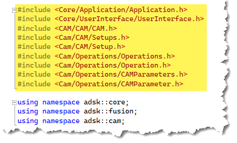
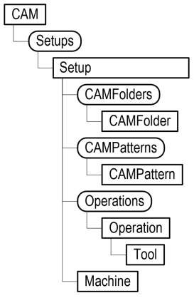
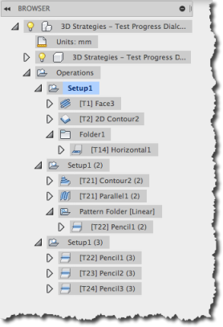
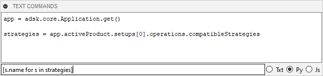
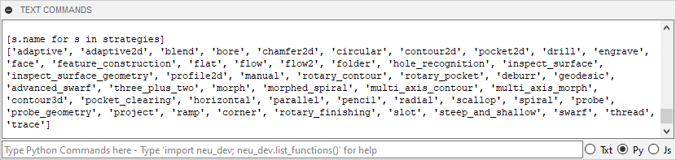
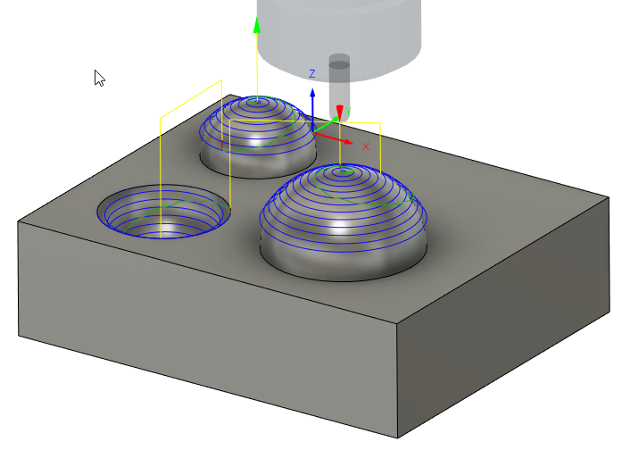

The Fusion CAM API has been designed and developed to provide a high level of automation within the manufacture space. The CAM API functionality is provided through CAM-specific libraries. If you’ve used the API to automate the Design portion of Fusion, you’ve used the asdk.core and asdk.fusion libraries. The CAM functionality is defined in the adsk.cam library and is referenced into your program using the techniques shown below.
import adsk.core, adsk.fusion, adsk.cam, traceback
If you use the “Create” command from the Scripts and Addins Manager in Fusion to create a new C++ script or add-in, the resulting cpp file contains the #include and using statements referencing the cam namespace and header file.
Using CAMAll.h references all the header files in the CAM library and makes programming easier because everything is available to Intellisense; however, it’s not as efficient as specifying only the header files you need. For example, a program that accesses an operation and makes some edits to its parameters would include only the headers shown below.

A Fusion document acts as a container of different types of data. The top-level containers are referred to as products. There are different types of products depending on the type of data they contain. For example, a Design product contains all the design-related data. All documents always contain a Design product and may include other types of products depending on what has been created in the document. For example, when you enter the CAM workspace in the user interface, a CAM product is added to the document, and all CAM-related data is contained within it. When you need to access data using the API, you first need to access the product that contains that data.
The example below demonstrates getting the CAM product, if it exists, from the active document.
# Get the application. app = adsk.core.Application.get() # Get the active document. doc = app.activeDocument # From the Products collection on the active document, get the CAM Product. cam: adsk.cam.CAM = doc.products.itemByProductType('CAMProductType') # Check if anything was returned. if cam == None: ui.messageBox('There is no CAM data in the active document') return
If the Manufacturing workspace is active, the CAM product will be the “active” product and can be obtained using the Application.activeProduct property, as shown below. The sample also shows how you can use this to determine if the Manfufacturing workspace is active.
# Get the application and userInterface app = adsk.core.Application.get() ui = app.userInterface # Get the active product. cam = adsk.cam.CAM.cast(app.activeProduct) # Check if anything was returned. if (cam is None): ui.messageBox('The Manufacturing workspace must be active') return
Products for data types other than Design only exist in a document if the user has explicitly created data of that type. For example, if the Manufacture workspace has never been activated, the document will not have a CAM product.
Once you have a reference to the CAM object, you can traverse the object model to access the specific object you need. The diagram below illustrates a simplified view of the object model for the CAM object. This diagram illustrates the relationships between objects and how you traverse the object model to get a particular type of object.

Using the object model in the API is not very different from what you do when using Fusion interactively. Once you have a reference to the CAM object in a document, getting at the Setups and Operations it contains is straightforward. You get the existing setups of a document by using the setups property of the CAM object, which returns a Setups collection object. The API object model for CAM closely mirrors the structure you see in the CAM workspace browser, as shown below. The document may contain one or more setups. A setup may contain one or more operations, folders, or patterns. Folders and patterns (patterns are a type of folder) may contain one or more operations, folders, and patterns.

Using the API, you navigate a similar structure to what you see in the browser to access a specific CAM object. Below is a Python code snippet that shows how to access the first setup, and the first operation and folder in the setup, assuming a document like that shown above is being used.
# Get the Setups collection object from the CAM object. setups = cam.setups # Get the first Setup object in the CAM product. setup = setups.item(0) # Get the Operations collection object that contains all the operations in the setup. operations = setup.operations # Get the first operation in the collection. operation = operations.item(0) # Get the Folders collection object that contains all the folders in the setup. folders = setup.folders # Get the first folder in the collection. folder = folders.item(0) # Get the Operations collection object from the folder. folderOperations = folder.operations # Get the first operation from the folder. operation = folderOperations.item(0)
The code above uses the item method to get a setup, operation, and folder and specifies an index of 0 to get the first item in each collection. However, it can be very useful to use the itemByName method instead to get a specific setup, operation, or folder using its name, as illustrated below.
# Get the Setups collection of all setups in the document. setups = cam.setups # Get the setup named "Setup1". setup = setups.itemByName('Setup1') # Get the folder named "Folder1" within this setup. folder = setup.folders.itemByName('Folder1') # Get the operation named "2D Adaptive1" within the folder. horizOperation = folder.operations.itemByName('2D Adaptive1')
Setups define a coordinate system and various other settings that all of the operations owned by the setup use. As seen in the previous object model, you can access a Setups collection object directly from the CAM object. The Setups collection provides access to all of the existing setups in a document. The code above illustrates this by getting the Setups from the CAM object and then using the itemByName method of the Setups object to get the setup named "Setup1".
Creating a setup uses the same principle as the Design API to create a feature. You first call the createInput method on the Setups object to create a SetupInput object. An input object is analogous to the command dialog. It provides access to all the settings needed to define a particular type of object. When working with CAM, most of these settings are available as a collection of CAM Parameters. For a more detailed explanation of CAM Parameters, see the Introduction to CAM Parameters topic.
Below is some sample code that creates a new setup.
# Get the Setups collection. setups = cam.setups # Create a SetupsInput object to define a milling setup. setupInput = setups.createInput(adsk.cam.OperationTypes.MillingOperation) # Specify the first body in the model as the model geometry. camOcc = cam.designRootOccurrence setupInput.models = [camOcc.bRepBodies[0]] # Set the origin to be at the top center of the model box. originParam = setupInput.parameters.itemByName('wcs_origin_mode') choiceVal: adsk.cam.ChoiceParameterValue = originParam.value choiceVal.value = 'modelPoint' originPoint = setupInput.parameters.itemByName('wcs_origin_boxPoint') choiceVal: adsk.cam.ChoiceParameterValue = originPoint.value choiceVal.value = 'top center' # Set the comment for the program. commentParam = setupInput.parameters.itemByName('job_programComment') commentParam.value.value = 'This is the comment.' # Create the setup. setup = setups.add(setupInput)
A setup owns operations, and those operations compute using the setup's settings. An Operations collection object is obtained from a Setup. This collection provides access to the operations owned by the setup and supports creating new operations. A new operation is created in the same way as a setup; create an input object, define the settings, and pass it to the add method to create the setup.
The OperationInput provides access to the CAM parameters defining all its settings. The creation of the OperationInput has one argument to specify the type of operation, which is referred to as the "strategy", to create. The strategy is specified using a string. The strategy types available can vary depending on your license and available extensions. To get a list of the available strategies, you use the Operations.compatibleStrategies property, which returns a list of strategies supported for your configuration. A quick way to do this is to use the TEXT COMMANDS window with the "Py" setting, as shown below.

This results in the output shown below.

app = adsk.core.Application.get() strategies = app.activeProduct.setups[0].operations.compatibleStrategies [s.title for s in strategies]
The code below demonstrates the workflow of creating a new scallop operation. It expects the tool to already be in the document and it finds all spherical faces to use for the scallop.
# Create a new scallop operation. opInput = setup.operations.createInput('scallop') # Set some parameters. stepoverParam = opInput.parameters.itemByName('stepover') stepoverParam.expression = '0.1 in' overrideParam = opInput.parameters.itemByName('overrideModel') overrideParam.expression = 'true' setupModelParam = opInput.parameters.itemByName('includeSetupModel') setupModelParam.expression = 'false' # Set the tool using the first tool in the document. opInput.tool = cam.documentToolLibrary.item(0) # Find the spherical faces in the model. body = cam.designRootOccurrence.bRepBodies.item(0) sphereFaces = [] face: adsk.fusion.BRepFace = None for face in body.faces: if face.geometry.objectType == adsk.core.Sphere.classType(): sphereFaces.append(face) # Add the geometry to the operation. modelParam = opInput.parameters.itemByName('model') geomSelect: adsk.cam.GeometrySelection = modelParam.value geomSelect.value = sphereFaces # Create the operation. op = setup.operations.add(opInput) # Generate the operation. cam.generateToolpath(op)
The picture below shows the result of running the code above to create a new setup and operation. The ball nose tool was the only tool in the document library and the model was created to have several spherical faces on the top of the model.

The CAM class provides two different methods for generating toolpaths; “generateAllToolpaths” for generating all toolpaths in a document and “generateToolpath” for generating the toolpaths for a specific operation, collection of operations, or all the toolpaths of a specific setup, folder or pattern.
Assuming you already have a reference to the CAM object you can generate all toolpaths in a document with the single line of Python code shown below.
future = cam.generateAllToolpaths(False)
The generateAllToolpaths method takes a single boolean argument to specify whether or not to skip valid toolpaths and only regenerate invalid toolpaths.
Generating toolpaths is an asynchronous operation which means that the call to generate a toolpath will start the process but return control back to you while it continues to process in the background. The generateAllToolpaths and generateToolPath methods return a GenerateToolpathFuture object which you can use to check the current state of the of toolpath generation. The GenerateToolpathFuture class provides properties for getting the number of operations involved, getting the number of completed toolpaths, and for determining if generation is complete or not.
There is a CAM category in the set of sample programs that are part in the API help and some of those demonstrate generating toolpaths.
The Python code below demonstrates generating a toolpath for a single operation, a collection of operations, all the operations of a specific setup, or for a collection of setups.
future = cam.generateToolpath(operation) future = cam.generateToolpath(collectionOfOperations) future = cam.generateToolpath(setup) future = cam.generateToolpath(collectionOfSetups)
The CAM class provides two different methods for posting NC files; postProcessAll for posting all toolpaths in a document and postProcess for posting the toolpaths for a specific operation, collection of operations, or all the toolpaths of a specific setup, folder or pattern.
Assuming you already have a reference to the CAM object, the Python code below will post all the toolpaths in a document.
# Specify the program name. programName = '101' # Specify a destination folder. outputFolder = 'C:/MyNcFolder' # Specify a post configuration to use. postConfig = cam.genericPostFolder + '/' + 'fanuc.cps' # Specify the NC file output units. units = adsk.cam.PostOutputUnitOptions.DocumentUnitsOutput # Create the postInput object. postInput = adsk.cam.PostProcessInput.create(programName, postConfig, outputFolder, units) # Open the resulting NC file in the editor for viewing postInput.isOpenInEditor = True # Post all toolpaths in the document cam.postProcessAll(postInput)
To post an NC file for a single operation, a collection of operations, or for all the operations of a specific setup you can use the postProcess method. Assuming you have a postInput already defined, the Python code below will post the toolpath for the first operation of the first setup in a document.
setup = setups[0]
operations = setup.allOperations
operation = operations[0]
if operation.hasToolpath == True:
cam.postProcess(operation, postInput)
else:
ui.messageBox('Operation has no toolpath to post.')
return
The CAM category in the API help has some samples demonstrating posting NC files.
Recent additions to the CAM API allow for the setting of post processor properties for use with a post process input. The properties are set using named value pairs, the first value must be a string containing the property name as it is defined in the post processor. The second value is what you would like the property to be set to when post processing, this must be set using a value input to define the properties type and value. An example of setting the ‘showSequenceNumbers’ post property can be seen below:
# Create the input options needed for post processing. postInput = adsk.cam.PostProcessInput.create(programName, postProcessor, outputFolder, units) # Create an object collection for post properties. postProperties = adsk.core.NamedValues.create() # Change the show sequence number property. disableSequenceNumbers = adsk.core.ValueInput.createByBoolean(False) # When adding the named value, the name needs to be identical to the property defined in the post processor. postProperties.add("showSequenceNumbers", disableSequenceNumbers) # Set the post properties to be the named values that have been created. postInput.postProperties = postProperties
The CAM class provides two different methods for generating setup sheets; generateAllSetupSheets for generating all setup sheets for all operations in a document and generateSetupSheet for generating the setup sheet(s) for a specific operation, collection of operations, or all the operations of a specific setup, folder or pattern.
Assuming you already have a reference to the CAM object, the Python code below generates all setup sheets for all operations in a document.
# Specify the output folder and format for the setup sheets. outputFolder = 'C:/MySetupSheetsFolder' # Specify the sheet format. Note that .ExcelFormat is not supported on Mac. sheetFormat = adsk.cam.SetupSheetFormats.HTMLFormat # Generate setup sheets for all operations in the document and view the results. cam.generateAllSetupSheets(sheetFormat, outputFolder, True)
To generate the setup sheet(s) for a single operation, a collection of operations or for all the operations of a specific setup you use the generateSetupSheet method. The Python code below will generate the setup sheet for the first operation of the first setup in a document.
setups = cam.setups
setup = setups[0]
operations = setup.allOperations
operation = operations[0]
if operation.hasToolpath == True:
cam.generateSetupSheet(operation, sheetFormat, outputFolder, True)
else:
ui.messageBox('This operation has no toolpath.')
return
The CAM category in the API help has some samples demonstrating generating setup files.